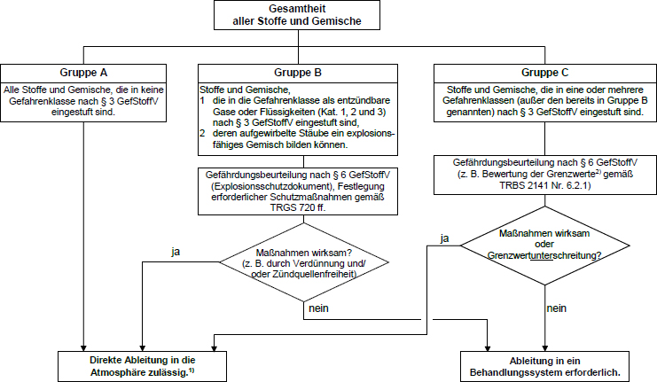

Anhang
Schema zur Beurteilung des gefahrlosen Ableitens von Gefahrstoffen nach Gefährlichkeitsmerkmalen

1)
Es dürfen jedoch keine sonstigen Gefährdungen auftreten.
2)
Soweit stoffspezifisch anerkannte Grenzwerte vorliegen.